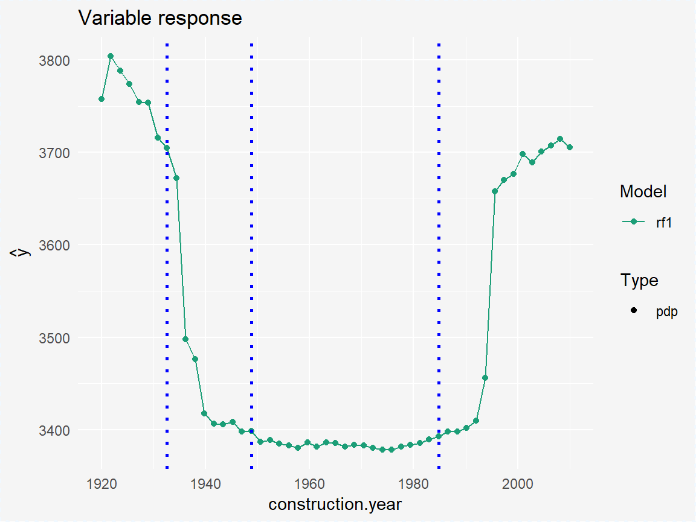
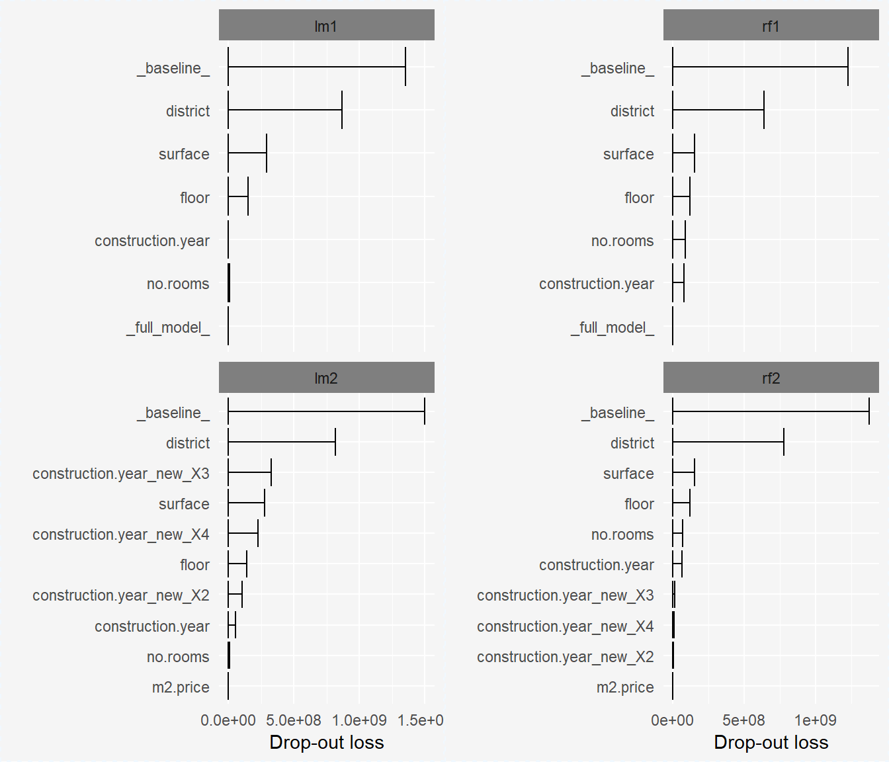

Regression example - apartments dataset
Anna Gierlak
2019-04-19
example_apartments.RmdFitting models to the original dataset - linear model and random forest:
model_lm1 <- lm(m2.price ~ ., data = apartments)
explainer_lm1 <- explain(model_lm1, data = apartmentsTest[1:3000,2:6], y = apartmentsTest[1:3000,1], label = "lm1")
set.seed(111)
model_rf1 <- randomForest(m2.price ~ ., data = apartments)
explainer_rf1 <- explain(model_rf1, data = apartmentsTest[1:3000,2:6], y = apartmentsTest[1:3000,1], label = "rf1")Creating safe_extractor object using SAFE package:
safe_extractor <- safe_extraction(explainer_rf1, verbose = FALSE)print(safe_extractor)
#> Variable 'construction.year' - selected intervals:
#> (-Inf, 1931)
#> [1931, 1949)
#> [1949, 1985)
#> [1985, Inf)
#> Variable 'surface' - selected intervals:
#> (-Inf, 33)
#> [33, 72)
#> [72, 121)
#> [121, Inf)
#> Variable 'floor' - selected intervals:
#> (-Inf, 4)
#> [4, Inf)
#> Variable 'no.rooms' - no transformation suggested.
#> Variable 'district' - created levels:
#> c("Bemowo", "Bielany", "Praga", "Ursus", "Ursynow", "Wola") -> PragaUrsynowWolaBemowoBielanyUrsus
#> Zoliborz -> Zoliborz
#> c("Mokotow", "Ochota") -> MokotowOchota
#> Srodmiescie -> SrodmiescieIn the plot above we can see which points have been chosen to be the breakpoints for particular variable:
plot(safe_extractor, "construction.year")
Using created object to extract new features:
data1_categorical <- safely_transform_data(safe_extractor, apartmentsTest[3001:6000,], encoding = "categorical", verbose = FALSE)| district | m2.price | construction.year | surface | floor | no.rooms | construction.year_new | surface_new | floor_new | district_new |
|---|---|---|---|---|---|---|---|---|---|
| Bielany | 3542 | 1979 | 21 | 6 | 1 | [1949, 1985) | (-Inf, 33) | [4, Inf) | PragaUrsynowWolaBemowoBielanyUrsus |
| Srodmiescie | 5631 | 1997 | 107 | 2 | 4 | [1985, Inf) | [72, 121) | (-Inf, 4) | Srodmiescie |
| Bielany | 2989 | 1994 | 41 | 9 | 2 | [1985, Inf) | [33, 72) | [4, Inf) | PragaUrsynowWolaBemowoBielanyUrsus |
| Ursynow | 3822 | 1968 | 28 | 2 | 2 | [1949, 1985) | (-Inf, 33) | (-Inf, 4) | PragaUrsynowWolaBemowoBielanyUrsus |
| Ursynow | 2337 | 1971 | 146 | 3 | 6 | [1949, 1985) | [121, Inf) | (-Inf, 4) | PragaUrsynowWolaBemowoBielanyUrsus |
| Ochota | 3381 | 1956 | 97 | 8 | 3 | [1949, 1985) | [72, 121) | [4, Inf) | MokotowOchota |
The same with one-hot encoding:
data1_onehot <- safely_transform_data(safe_extractor, apartmentsTest[3001:6000,], encoding = "one-hot", verbose = FALSE)| district | m2.price | construction.year | surface | floor | no.rooms | construction.year_new_X2 | construction.year_new_X3 | construction.year_new_X4 | surface_new_X2 | surface_new_X3 | surface_new_X4 | floor_new_X2 | district_new_Zoliborz | district_new_MokotowOchota | district_new_Srodmiescie |
|---|---|---|---|---|---|---|---|---|---|---|---|---|---|---|---|
| Bielany | 3542 | 1979 | 21 | 6 | 1 | 0 | 1 | 0 | 0 | 0 | 0 | 1 | 0 | 0 | 0 |
| Srodmiescie | 5631 | 1997 | 107 | 2 | 4 | 0 | 0 | 1 | 0 | 1 | 0 | 0 | 0 | 0 | 1 |
| Bielany | 2989 | 1994 | 41 | 9 | 2 | 0 | 0 | 1 | 1 | 0 | 0 | 1 | 0 | 0 | 0 |
| Ursynow | 3822 | 1968 | 28 | 2 | 2 | 0 | 1 | 0 | 0 | 0 | 0 | 0 | 0 | 0 | 0 |
| Ursynow | 2337 | 1971 | 146 | 3 | 6 | 0 | 1 | 0 | 0 | 0 | 1 | 0 | 0 | 0 | 0 |
| Ochota | 3381 | 1956 | 97 | 8 | 3 | 0 | 1 | 0 | 0 | 1 | 0 | 1 | 0 | 1 | 0 |
Feature selection using both “categorical” and “one-hot” methods of encoding:
vars_categorical <- safely_select_variables(safe_extractor, data1_categorical, which_y = 2, encoding = "categorical", verbose = FALSE)
print(vars_categorical)
#> [1] "surface" "floor" "no.rooms"
#> [4] "construction.year_new" "district_new"
vars_onehot <- safely_select_variables(safe_extractor, data1_onehot, which_y = 2, encoding = "one-hot", verbose = FALSE)
print(vars_onehot)
#> [1] "district" "construction.year"
#> [3] "surface" "floor"
#> [5] "no.rooms" "construction.year_new_X2"
#> [7] "construction.year_new_X3" "construction.year_new_X4"
#> [9] "surface_new_X4"
data1_categorical <- data1_categorical[,c('m2.price', vars_categorical)]
data1_onehot <- data1_onehot[,c('m2.price', vars_onehot)]First few rows for data with categorical encoding, after feature selection:
| m2.price | surface | floor | no.rooms | construction.year_new | district_new |
|---|---|---|---|---|---|
| 3542 | 21 | 6 | 1 | [1949, 1985) | PragaUrsynowWolaBemowoBielanyUrsus |
| 5631 | 107 | 2 | 4 | [1985, Inf) | Srodmiescie |
| 2989 | 41 | 9 | 2 | [1985, Inf) | PragaUrsynowWolaBemowoBielanyUrsus |
| 3822 | 28 | 2 | 2 | [1949, 1985) | PragaUrsynowWolaBemowoBielanyUrsus |
| 2337 | 146 | 3 | 6 | [1949, 1985) | PragaUrsynowWolaBemowoBielanyUrsus |
| 3381 | 97 | 8 | 3 | [1949, 1985) | MokotowOchota |
Transforming another data that will be used later in explainers:
data2_categorical <- safely_transform_data(safe_extractor, apartmentsTest[6001:9000,], encoding = "categorical", verbose = FALSE)[,c('m2.price', vars_categorical)]
data2_onehot <- safely_transform_data(safe_extractor, apartmentsTest[6001:9000,], encoding = "one-hot", verbose = FALSE)[,c('m2.price', vars_onehot)]Fitting models to data containg newly created columns:
model_lm2_categorical <- lm(m2.price ~ ., data = data1_categorical)
explainer_lm2_categorical <- explain(model_lm2_categorical, data = data2_categorical, y = apartmentsTest[6001:9000,1], label = "lm2 - categorical")
model_lm2_onehot <- lm(m2.price ~ ., data = data1_onehot)
explainer_lm2_onehot <- explain(model_lm2_onehot, data = data2_onehot, y = apartmentsTest[6001:9000,1], label = "lm2 - onehot")
set.seed(111)
model_rf2_categorical <- randomForest(m2.price ~ ., data = data1_categorical)
explainer_rf2_categorical <- explain(model_rf2_categorical, data2_categorical, apartmentsTest[6001:9000,1], label = "rf2 - categorical")
set.seed(111)
model_rf2_onehot <- randomForest(m2.price ~ ., data = data1_onehot)
explainer_rf2_onehot <- explain(model_rf2_onehot, data2_onehot, apartmentsTest[6001:9000,1], label = "rf2 - onehot")